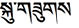

ADIM VI: ÇAKRALAR VE RENKLİ “Kİ” TOPLARI YAŞAM ENERJİSİYLE İŞBİRLİĞİ...
“Ki” toplarını görevlerine göre renklendirip onları işe koşmayı öğrenmenin zamanı geldi!
Bu adımda, yaşamını tam ve bütünlük hissiyle deneyimlemekten seni alıkoyan bütün büyük ve kilitli kapıları, nasıl kolayca açabileceğini öğretiyor olacağım.
Bedenindeki yedi ana kapının, doğru anahtarlarını cebinde taşımaya başladığın ve onları iyi seçip kullandığın vakit, artık hiçbir blokajda kapı önünde kalmayarak yoluna devam edebileceksin.
“Ki” toplarını renklendirmekle uğraşmak yerine, daha önce öğrettiğim gibi, “Ki” toplarını sadece hissederek onlardan faydalanmayı kendin için yeterli bulabilir ve bu eğitimin şimdilik gereksiz olduğunu düşünebilirsin. Aslına bakarsan “Ki” enerjisinde yeterince ustalaştığında belki onları renklerine ve görevlerine göre kullanma tekniğine ihtiyaç duymayacaksındır. Fakat bu aşamada hepimiz henüz birer çırak olarak aşk yolunda yürürken, kapıları maymuncukla açacak lüksümüz ve bunun için harcayacak uzun zamanlarımız yok. Yanımızda doğru anahtarları taşımak ve onları ait oldukları anahtar deliklerine soktuğumuzda kolayca blokajları çözüp içinden geçiyor olmak, bence senin de işine daha çok yarayabilecek en mantıklı yöntemdir.
Bu yüzden “Ki” toplarının taşıdıkları renklere göre hangi görevleri yerine getirdiklerini, onları nasıl kullanabileceğini ve yedi ana kapıda senin tarafından çözülmeyi bekleyen hangi blokajlara sahip olduğunu bilmek zorundasın.
ÇEKİÇ DARBESİ
İşinin piri bir ustaya, müşterinin biri iş götürür. Usta eline aldığı işi hemen oracıkta tek çekiç darbesiyle hallediverir ve müşteriye de bin liralık fatura hazırlayıp eline tutuşturur.
Faturanın şişkinliği karşısında şaşıran müşteri, öfkesini de gizleyemeyerek ustaya sitem eder “Hayırdır usta! Ne iş yaptın ki şimdi? Altı üstü tek bir çekiç darbesi. Bin lira parayı ne için istiyorsun benden?” der.
Ustanın cevabı hazırdır:
“Hesabın dökümü faturada yazıyor.”
Faturayı eline alan müşteri, yaşadığı şaşkınlık üzerine artık söyleyecek başka şey bulamaz.
“1 lira çekiç vurma ücreti, 999 lira onu nereye vuracağını bilme ücreti.”
Yaşamındaki dönüşümü sağlayacak olan iyileştirici darbeleri, bedeninde nereye ve nasıl vuracağının bilgisine senin de hâkim olman gerektiğini anlamalısın.
İnsan vücudunda yedi tane ana kapı, diğer bir deyişle yedi ana enerji merkezi bulunur. Sanskrit dilinde “Çark” anlamına gelen bu merkezler düzenine Kabala’da “Shaar”, Uzakdoğu’daysa “Chakra” denir. Yedi enerji merkezinin işlevsellik kazanma eğitimi aslında sufizmin yedi mertebeli “nefis” terbiyesine de karşılık gelir: Nefs-i Emmare, Nefs-i Levvame, Nefs-i Mülhime, Nefs-i Mutmeinne, Nefs-i Radiye, Nefs-i Merdiyye, Nefs-i Zekiye veya Kâmile...
İnsanlar yazık ki çakraları, ya bir yoga ritüeli ya da bir Uzakdoğu safsatası olarak değerlendirdiklerinden, aslında yaşamlarında sıkıntısını çektikleri hastalıkların ya da bir türlü aşamadıkları sosyal ve ruhsal blokajların çözümlerini kendileri dışında arayıp durmaya devam ediyorlar.
Çakralar, sen izin verdiğin vakit, hakikatine doğru açılacak olan kapılardır!
Unutma:
Zihin yanılsamaya, kalp hakikate yöneltir.
Hangisini dinlersen, kendini orada bulursun...